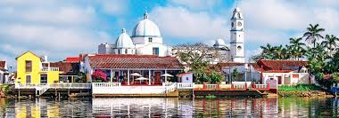
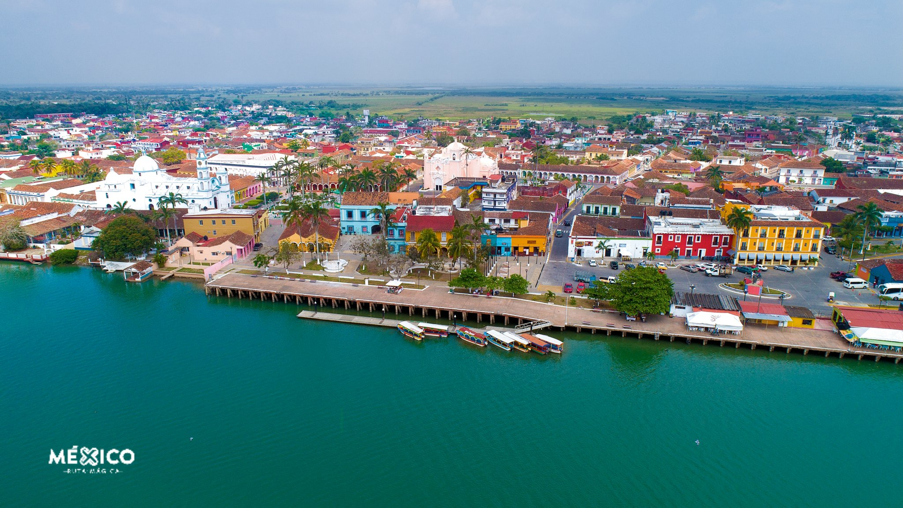

Información


Tlacotalpan es un pueblo mágico ubicado a orillas del río Papaloapan. "La Perla del Papaloapan" Es famoso por su arquitectura colonial, sus calles coloridas y su riqueza cultural. Es una localidad del sureste del estado de Veracruz dentro de los límites de la Cuenca del Papaloapan, en México, su nombre significa “tierra partida”. Ubicado en la costa del Golfo de México, es conocido por su tradición pesquera y por los dos festivales anuales de música jarocha y décima que patrocina, de igual forma se caracteriza por su arquitectura vernácula y por formar un importante vínculo cultural e histórico entre la música de Andalucía, del centro-occidente de África y de las culturas nativas de Mesoamérica